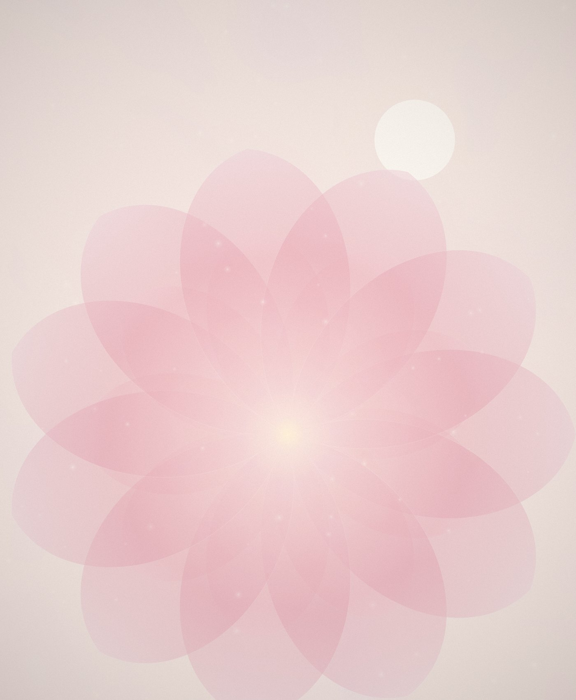
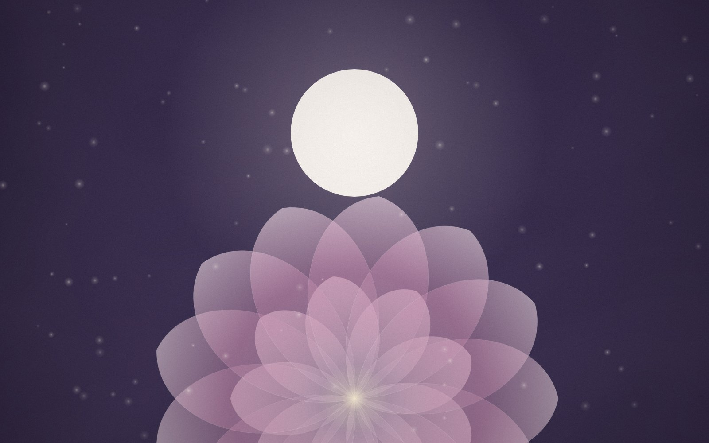

Mereana K.Week 24 · Second room
The first kick I was sure about
Three weeks of “was that it?” and then, on the bus home, unmistakable. I laughed out loud and a stranger smiled back.
A members’ society for the months before and after
Small rooms with a guide in each, a journal worth reading slowly, and a feed that ends. Luna Bloom is a quieter place to be pregnant online.

Today’s set · Tuesday
Members share in small, complete sets. When you reach the end, that’s the end — by design.
Three weeks of “was that it?” and then, on the bus home, unmistakable. I laughed out loud and a stranger smiled back.
Warm bath, one chapter, phone in the other room. It took a fortnight to stick. Sleep is still broken, but the evenings aren’t.
Everyone asks about the baby. The midwife in our room asked about me, and it was the first time I cried properly.
That’s today’s set. The next one arrives tomorrow morning. Close the app and put your feet up.
Rooms, not threads
Each room holds up to forty members and one guide — a midwife, lactation consultant or perinatal counsellor — present in every conversation.
Nausea, news and not telling anyone yet.
Energy returns. So do the questions about everything else.
Birth plans, bags by the door, and patience.
The newborn weeks, told honestly.
The Journal

Gatherings
Membership opens on the first of each month
Tell us your due date and we’ll hold a place in the right room.